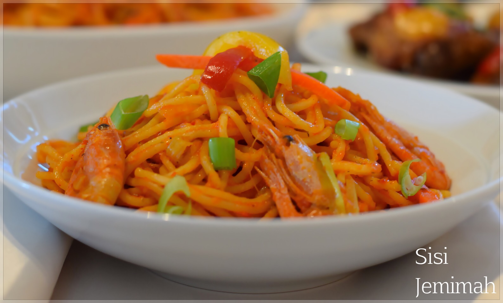

Home
Spaghetti recipe
Spaghetti

Description
Jollof spaghetti is a delicious pasta dish prepared using a method
inspired by Nigerian jollof rice. It is cooked in a rich tomato and pepper
sauce and can be combined with vegetables and protein for a more
satisfying meal.
This recipe is easy to prepare and can be made with chicken, beef or
shrimps. The spaghetti is combined with the tomato sauce, fried vegetables
and protein to create a flavorful and filling meal.
Ingredients
- 500g spaghetti
- 150g boneless raw chicken, beef or shrimps
- 2 cups chicken or beef stock
- 1/2 cup cooking oil
- 3 red bell peppers
- 1 yellow bell pepper
- 1 green bell pepper
- 2 carrots or 1 cup frozen carrots
- 1/2 can plum tomatoes or 3 medium tomatoes
- 2 Scotch bonnet peppers
- Onions
- Garlic
- Spring onions
- Curry powder
- Thyme
- Bay leaves
- Knorr chicken cubes
- Black pepper
- Salt
Steps
-
Cook the spaghetti in boiling water until tender, then drain and set it
aside.
-
Blend the tomatoes, red bell peppers, onion and Scotch bonnet peppers
until smooth.
-
Heat some oil in a saucepan and sauté half of the chopped onions until
translucent.
-
Add the blended pepper mixture, curry powder, thyme, bay leaves,
seasoning cubes and salt.
- Allow the pepper mixture to fry until the oil rises to the top.
-
In a separate frying pan or wok, heat some oil and sauté the remaining
onions.
- Add the chopped garlic and cook until fragrant.
-
Add the marinated chicken, beef or shrimps and fry until fully cooked.
-
Add the chopped peppers, carrots and spring onions and sauté for 5–6
minutes.
- Set the fried vegetables and protein aside.
-
Add the chicken or beef stock to the cooked pepper sauce and allow it to
cook for 2–3 minutes.
- Add the cooked spaghetti and mix thoroughly with the sauce.
- Add the fried vegetables and protein and mix everything together.
- Allow the spaghetti to cook uncovered for another 2–3 minutes.
- Serve hot and enjoy.